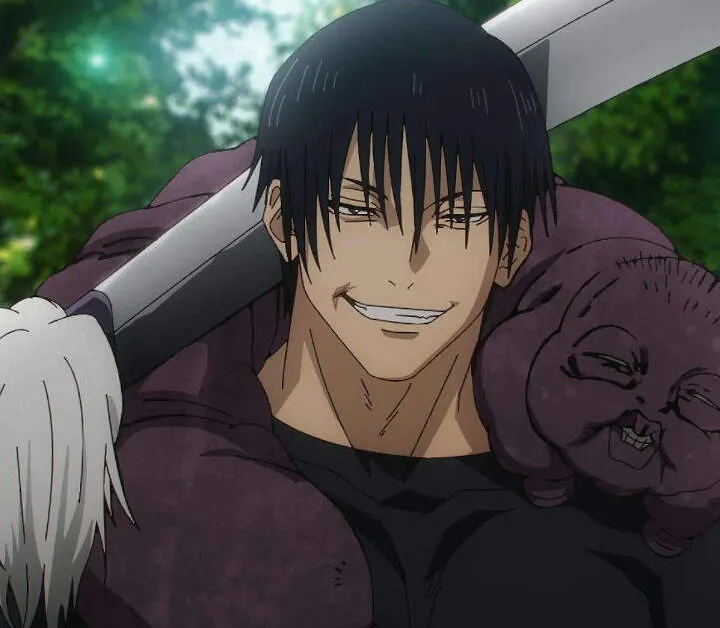
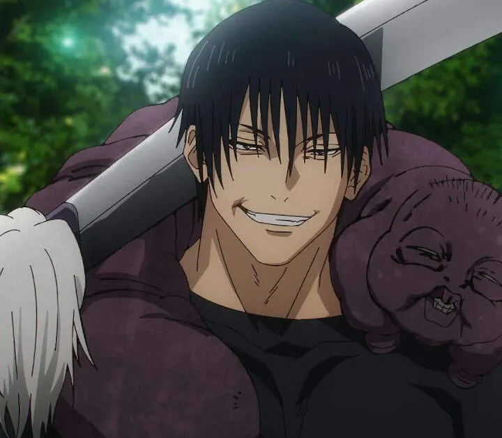

"Jujutsu Kaisen" é uma série de mangá e anime que rapidamente se tornou um fenômeno global desde seu lançamento. Criado por Gege Akutami, o enredo gira em torno de Yuji Itadori, um adolescente que se envolve com o mundo das artes marciais sobrenaturais após consumir um poderoso talismã amaldiçoado. Esse evento desencadeia uma série de batalhas contra espíritos malignos e criaturas sobrenaturais, levando Yuji a se tornar um estudante da Jujutsu High School, onde aprende a controlar suas novas habilidades e enfrenta desafios complexos junto a seus colegas.
O apelo de "Jujutsu Kaisen" vai além de suas intensas cenas de ação e animação de alta qualidade; ele também é elogiado por seu enredo envolvente e personagens profundos. O contraste entre momentos sombrios e leves, assim como a exploração de temas como a luta interna contra as próprias trevas, adiciona uma camada de complexidade que ressoa com o público. A série também se destaca por suas batalhas estratégicas e um sistema de poderes bem desenvolvido, que contribuem para uma narrativa dinâmica e emocionante, mantendo os espectadores ansiosos por cada novo episódio ou capítulo.
 
